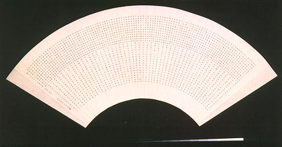

義助慰安婦
—— 李敖百件珍藏義賣藝術品（第38件）
品 名： C7. 極品毫芒扇面 預估價： 50 萬 成交價： 50 萬 說 明： 中國人避暑的方法很多，如古人不會製冰，便於冬季時將河上之冰塊埋於地底下，待夏季時再取出來用，因冰太貴，故一般人保持涼爽的方法就是使用扇子。扇子最能表現中國文化氣息，於扇面上畫畫、寫字，尤以蠅頭小楷最為名貴，再扇面上書寫出比蒼蠅頭還小的字，稱之為毫芒小楷，需要有很好的筆力、功力及視力。此作品為李敖六十二年來從北京到台灣所看過最好的毫芒小楷，沒有火氣，無一字特粗或特細，放大後亦非常特殊好看。
